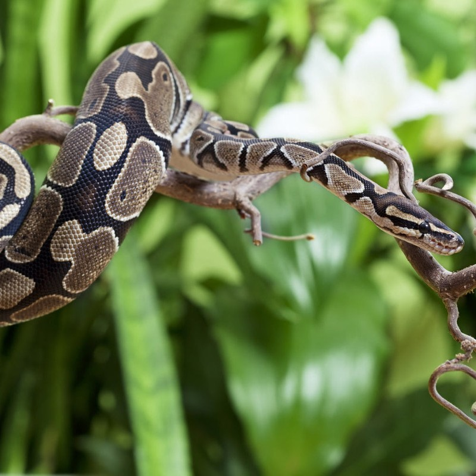
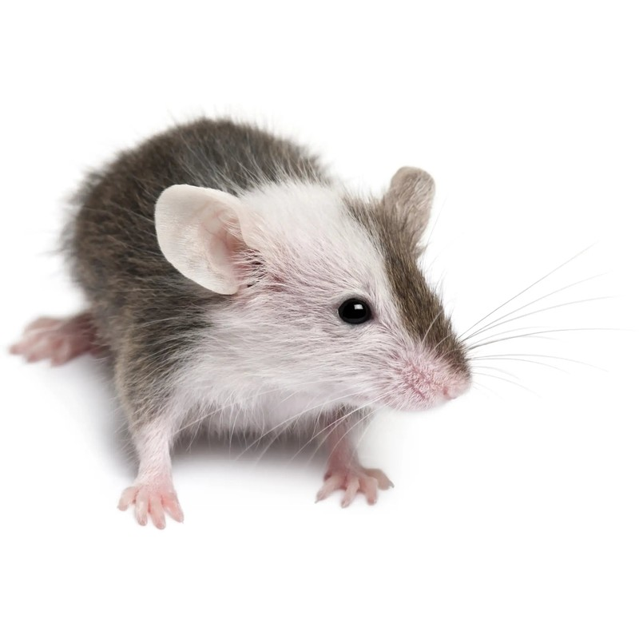

A royal python not eating is one of the most common worries for UK snake keepers, and it's usually down to the set-up, a coming shed or simple stress rather than illness. Royal pythons (Python regius, called ball pythons in America) are famous for skipping meals. This guide walks through the checks to make, using the Northampton Reptile Centre royal python care sheet and the RSPCA's royal python advice.

A royal python in a furnished set-up. Cover and the right heat are the first things to check.Not always. The RSPCA notes that pythons have a low energy output, so they may not feed as often as other snakes. Adults also don't need weekly meals: the shop's care sheet feeds adults once every two weeks, because weekly feeding can make them overweight. A missed meal or two from a healthy adult that's holding its weight isn't an emergency.
It's more of a concern if:
In any of those cases, see a reptile specialist vet. Weighing your snake regularly (the RSPCA recommends it) is the easiest way to know whether a fast matters.
| Possible cause | What to check | What to do |
|---|---|---|
| Temperatures too low | About 31°C (88°F) over one third of the vivarium, with the cool side around 29°C (85°F), per the care sheet | Use a guarded ceramic heat lamp on a pulse thermostat, and check both ends with a reptile thermometer |
| Not enough cover | Royals get stressed in large, open, bare spaces (RSPCA) | Add snug hides at both the warm and cool ends |
| Coming up to a shed | Dull skin or cloudy, blue-grey eyes | Offer a humid hide with damp moss and try again after the shed |
| New to the home | Moved in within the last week or two | Leave it alone and don't handle it for the first week |
| Prey size or condition | Prey should be slightly wider than the widest part of the snake's body | Thaw frozen prey fully and offer it with tongs inside the vivarium |
| Handling too soon | Being handled within 48 hours of a meal | Wait 48 hours after feeding before handling |
| Possible illness | Weight loss, diarrhoea, mites or breathing noises | Book a reptile vet |
Snakes are ectothermic, so a cold snake won't digest food properly and often won't feed at all. The care sheet aims for around 31°C on the basking side and 29°C on the cool side. That heat comes from a guarded ceramic heat lamp on one side of the ceiling, controlled by a pulse thermostat. Ceramics give off no light, so they can run day and night while the lights go off for a clear day–night cycle.
Don't trust the thermostat dial alone. A dial thermometer at each end will do, but a digital probe thermometer is more accurate. Keep the vivarium away from draughts, radiators and direct sun, as the RSPCA advises.
In the wild royals spend the hot part of the day in burrows and termite mounds. In a vivarium, a shy royal that can't hide at a comfortable temperature may refuse food. The RSPCA recommends several hides at both ends, each big enough to get into but small enough that the coiled snake touches the sides. The shop also adds extra décor for young snakes in a full-size enclosure, so they feel secure.

Frozen-thawed mice are the staple food for royal pythons.Buying a royal? The RSPCA advises finding out how a snake has been feeding before you take it on, and avoiding one that hasn't been feeding well.
The care sheet recommends a wooden vivarium of at least 3 × 2 × 2 ft, closer to 4 × 2 × 2 ft for large females, with large vents and sliding glass doors. If you'd rather start with everything matched, the ball python setup bundles the vivarium with heating and lighting.
How long can a royal python go without eating?
Healthy adults can go weeks, and sometimes longer, without food, which is why weight matters more than days. Young snakes have fewer reserves, so get a hatchling that's stopped feeding checked sooner.
Should I force-feed my royal python?
No. Don't try to force-feed at home. If a snake is losing weight, a reptile vet can find the cause and advise.
Can I leave a live mouse in with my royal python?
The care sheet and the RSPCA both recommend frozen-thawed rodents. Don't leave live prey unattended with a snake, because it can injure it.
How often should a royal python eat?
Hatchlings weekly and adults every two weeks, according to the care sheet. The RSPCA gives every five or six days for young snakes and every seven to 14 days for adults, depending on weight.
General information for UK keepers, not a substitute for advice from a reptile vet.
Northampton Reptile Centre is a family-run reptile specialist, founded in 1995, selling vivariums, heating, lighting, livefood and frozen food online and in store.
Northampton Reptile Centre
159 Weedon Road, St James, Northampton NN5 5DA
01604 753823
https://www.reptilecentre.com/